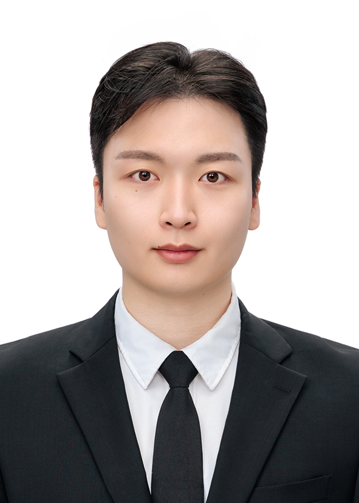
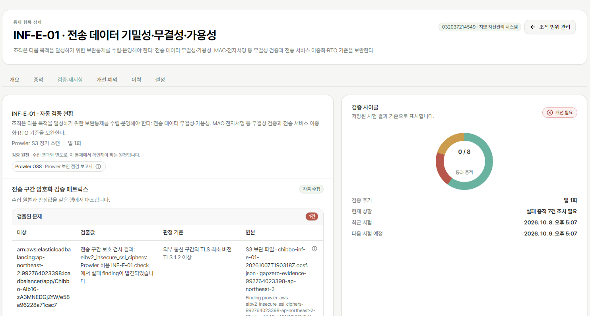

중앙대학교 소프트웨어학부 · 보안 / 소프트웨어
홍석현 SeokHyun Hong
보안 기준을 실제 시스템에서 어떻게 점검할 수 있을지 연구합니다. WhiteHat School에서는 보안 통제 관리 프로젝트를 이끌었고, 대학 연합 Uni-D에서는 해커톤과 데이터톤을 함께 운영했습니다.

중앙대학교 소프트웨어학부 · 보안 / 소프트웨어
보안 기준을 실제 시스템에서 어떻게 점검할 수 있을지 연구합니다. WhiteHat School에서는 보안 통제 관리 프로젝트를 이끌었고, 대학 연합 Uni-D에서는 해커톤과 데이터톤을 함께 운영했습니다.
보안 요구사항을 점검과 개선 조치까지 연결하는 통제 관리 시스템

커피 입문자의 취향을 추출 레시피에 반영하기 위해 설문을 설계하고 K-means로 응답을 군집화했습니다. 레시피 생성·수정 스크립트를 맡았습니다.
팀은 앱·서버·머신을 연결해 맛에 대한 피드백으로 다음 레시피를 바꾸고 추출 농도를 기록했습니다.
서버 저장소 →날씨에 맞으면서 실제로 가진 옷을 추천하는 앱입니다. Figma로 화면 흐름을 설계하고 Kotlin 프런트엔드를 전담했습니다.
기상청 API와 서버를 앱에 연결하고 테스트 피드백을 반영해 옷장 데이터와 날씨를 함께 사용하는 추천 화면을 완성했습니다.
앱 저장소 →시스템 해킹과 기초 암호학 스터디를 거쳐 All in Kali Linux에서 MITRE ATT&CK 기준으로 분석한 실습 보고서를 제출했습니다.
2026년 CTF Lab에서는 객체 단위 접근권한 검사를 주제로 교육용 문제와 풀이를 정리했습니다.
개인 보고서 제출 기록 →WhiteHat School 4기에서 패킷 처리와 시큐어코딩 과제를 구현하고 메모리 분석, 침해사고 대응, 보안 정책을 공부했습니다.
Skills2Work Seoul에서 데이터센터와 보안을 배웠고, HSPACE Knights Frontier 1기에서 CodeQL과 BAS·Elastic SIEM 사례를 조사했습니다.
패킷 프로그래밍 과제 →학력과 학생 자치, 병역 이력
2022.03 ~ 2028.02(Intended)
중앙대학교 소프트웨어학부 전공 재학
소프트웨어학부 제51대 학생회 문화부장(2022.12 ~ 2023.11)
소프트웨어학부 제54대 부학생회장(2025.12 ~)
문화부장으로 행사별 기획·결산과 차기 기수 인수인계를 정리했고, 부학생회장으로 학부 사업과 학생총회 운영에 참여했습니다.
2026.01 ~ 2026.12(Intended)
Uni-D 6기 회장, 총괄팀장 및 예산팀원
제6회 Uni-DTHON에서 8개 대학 참가자 132명의 해커톤·데이터톤 운영을 총괄했습니다. 해커톤 15팀이 결과물을 제출하고 데이터톤 17팀이 최종 심사에 참여했습니다. 트랙별 운영 결과 →
2023.12.26 ~ 2025.06.25
병장 만기 전역
취득 · 2023.07.28
취득 · 2025.03.28
취득 · 2025.04.08